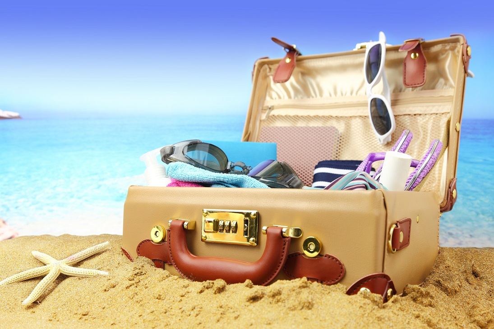
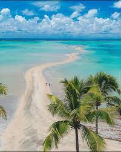

Um dia desses, estávamos pensando em fechar um pacote de viagem com dois destinos, para descansar e aproveitarmos ás ferias.
Nós comçamos uma jornada em Fortaleza-CE, com a primeira parada em em Jericoacoara.
Em Máceio iremos visitar Maragogi.
Na praia do Futuro nós ficamos no terraço Orbita Blue localizado em Fortaleza.

E fazer o passeio do dia com os turistas no Beach Park..
Acompanhar o guia e aproveitar o máximo
Explorando as praias, encontramos uma ilha muito bela..
Em Máceio, a busca por Maragogi.
Em Maceió, finalmente encontramos o caribe brasileiro
A praia á esquerda leva você a uma ilha escondida.
A ilha a direita tem belas vistas.
 Dentro da cidade encontramos várias feirinhas
Por último destino á praia de Ponta Verde